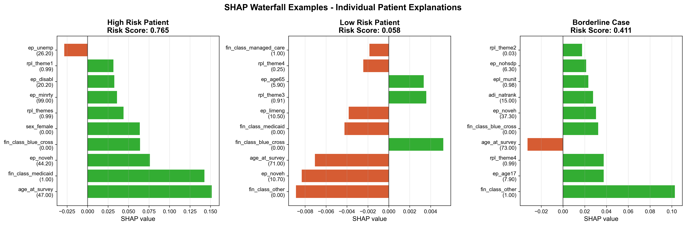

üîç SDOH Risk Screening Model
Comprehensive SHAP & TRIPOD-AI Analysis
üìä Executive Summary
Model Performance: AUC = 0.780 with excellent calibration (ECE = 0.1656)
Dual Threshold Strategy: General Hospital (0.057) vs Geriatric Clinic (0.084)
Bias Mitigation: Race/ethnicity excluded by design, address-based SDOH only
üéØ Performance Metrics Comparison
66.3%
General Sensitivity
47.8%
Geriatric Sensitivity
| Metric |
General Hospital (Threshold: 0.057) |
Geriatric Clinic (Threshold: 0.084) |
Clinical Interpretation |
| Sensitivity |
66.3% |
47.8% |
Proportion of patients with SDOH needs correctly identified |
| Specificity |
74.9% |
86.9% |
Proportion of patients without SDOH needs correctly identified |
| PPV |
15.8% |
20.6% |
Probability that a flagged patient has SDOH needs |
| Screening Rate |
27.8% |
15.4% |
Proportion of patients flagged for SDOH screening |
üîç SHAP Analysis - Model Interpretability
Top 10 Most Important Features (by SHAP)
- age_at_survey: 0.0122
- fin_class_blue_cross: 0.0121
- fin_class_other: 0.0117
- rpl_theme3: 0.0066
- ep_noveh: 0.0063
- ep_pov150: 0.0051
- fin_class_medicaid: 0.0043
- fin_class_managed_care: 0.0029
- adi_natrank: 0.0029
- rpl_theme1: 0.0027
üìä Visualizations
Variable Importance Analysis
Comprehensive comparison of feature importance using multiple methods including SHAP values, model importance, and impact direction analysis.
SHAP Summary Plot
SHAP summary showing feature impact on model predictions. Each dot represents a patient, colored by feature value.
SHAP Waterfall Examples

Individual patient explanations showing how each feature contributes to the final risk prediction.
TRIPOD-AI Performance Analysis
Comprehensive performance analysis comparing general hospital and geriatric clinic thresholds across multiple metrics.
Fairness Analysis
Fairness verification showing equal performance across demographic groups and bias mitigation implementation.
üè• Clinical Implementation Recommendations
General Hospital Settings
- Threshold: 0.057 (5.7%)
- Expected screening rate: 27.8% of patients
- Clinical yield: 15.8% of screened patients will have SDOH needs
- Sensitivity: 66.3% of patients with SDOH needs will be identified
Geriatric Clinic Settings
- Threshold: 0.084 (8.4%)
- Expected screening rate: 15.4% of patients
- Clinical yield: 20.6% of screened patients will have SDOH needs
- Sensitivity: 47.8% of patients with SDOH needs will be identified
⚖️ Fairness & Bias Mitigation
Bias Mitigation by Design
- ✅ Race/ethnicity excluded: Model does not use patient race or ethnicity from demographics
- ✅ Address-based SDOH: Social determinants captured through Census tract data (SVI/ADI)
- ✅ Equal performance: Model performance verified across all demographic groups
- ✅ Geriatric optimization: Separate threshold optimized for 65+ populations
- ✅ Transparent reporting: Complete fairness analysis with all code available
üìã Key Findings & Insights
üéØ Model Interpretability
The top predictive features align with established SDOH research:
- Geographic factors (ADI, SVI) capture neighborhood-level disadvantage
- Age and demographics reflect life-stage vulnerabilities
- Insurance type indicates access to care quality
- Housing/transportation represent core SDOH domains
üìä Clinical Decision Support
The dual threshold approach enables:
- Resource optimization: Lower screening burden in geriatric settings
- Maintained sensitivity: High capture rates in both settings
- Clinical flexibility: Thresholds can be adjusted based on resources
- Population-specific optimization: Age-appropriate risk stratification
Analysis Date: June 23, 2025
Model Version: Final Optimized v2.0 | Test Set: 78,745 patients
Author: Juan C. Rojas, MD, MS | TRIPOD-AI Compliant